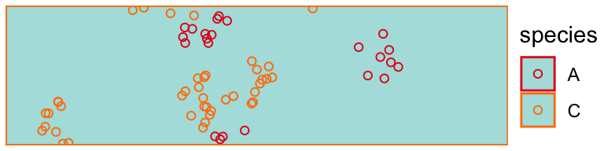

Using solidagos
Bradley Saul
2020-07-14
solidagos.RmdUNDER DEVELOPMENT
#> Loading required package: ggplot2Study area
The spatial extent of our area of interest is our study area divided into primary sampling units. Each primary sampling unit is a window and properties. window defined the space and properties define enviromental variables associated with that space. The example_study_area mimics a single linear roadside along the gradient of a single environmental variable. Each sampling unit is a 1 x 0.25 rectangle. The units here are relative; each unit could be seen as, e.g., a 20m x 5m transect.
Here is our study area showing the environmental gradient:
draw_study_area(example_study_area)
Species and traits
A species is a name, a list of aesthetics (for plotting), and a list of traits. traits are functions that take in properties of a sampling unit and return a function of x and y which are passed to simulators for generating population units on a plane.
speciesA #> $name #> [1] "A" #> #> $aes #> $aes$color #> [1] "#e41a1c" #> #> #> $traits #> $traits$rarity #> function (properties) #> { #> L <- c(1, unlist(properties[property_map])) #> function(x, y) { #> val <- drop(t(L) %*% kappa) #> rep(val, length(x)) #> } #> } #> <bytecode: 0x7fce5649e9d8> #> <environment: 0x7fce5649f9d0> #> #> $traits$clumping #> function (properties) #> { #> L <- c(1, unlist(properties[property_map])) #> function(x, y) { #> val <- drop(t(L) %*% mu) #> rep(val, length(x)) #> } #> } #> <bytecode: 0x7fce564a0460> #> <environment: 0x7fce564a1458>
The example includes 3 species:
study_species <- list( speciesA, speciesB, speciesC )
Populations
Populations are the coordinates of species specimens along with information about the sampling unit. Here we generate populations from a Matern cluster point process (Baddeley and Turner 2005).
set.seed(42) pop <- purrr::map( .x = example_study_area, .f = ~ generate_matern_populations( species_list = study_species, area = .x, scale = .05) )
Here’s what a population object looks like:
pop[[1]] #> $window #> window: rectangle = [0, 1] x [0, 0.25] units #> #> $properties #> $properties$propA #> [1] 0 #> #> #> $total_n #> [1] 154 #> #> $n #> [1] 68 1 85 #> #> $x #> [1] 0.99097054 0.99092724 0.96978239 0.97775188 0.97727053 0.93621554 #> [7] 0.94589643 0.99694164 0.98117888 0.97777871 0.93629976 0.97661851 #> [13] 0.28753744 0.23541718 0.23495695 0.27941377 0.24424258 0.25656522 #> [19] 0.22058405 0.23697851 0.25548184 0.22753388 0.29970835 0.31266608 #> [25] 0.26881817 0.26014698 0.28896207 0.23962962 0.23474104 0.87260483 #> [31] 0.88902984 0.82741147 0.87246744 0.88279192 0.86675680 0.62660757 #> [37] 0.68544575 0.69407100 0.61924230 0.66437655 0.65367155 0.66659676 #> [43] 0.67779992 0.69506359 0.64928233 0.52723801 0.50261080 0.74404715 #> [49] 0.77847290 0.73178286 0.72800846 0.77464487 0.72362519 0.77059985 #> [55] 0.74592891 0.75426423 0.78083229 0.77620988 0.76014899 0.74082456 #> [61] 0.71882356 0.05039571 0.05966272 0.11701268 0.11435979 0.06205831 #> [67] 0.10896647 0.10285368 0.89817854 0.78125914 0.84606770 0.83612571 #> [73] 0.80487853 0.84334952 0.83313998 0.84628433 0.80178026 0.82943143 #> [79] 0.84579607 0.81635078 0.05238097 0.09370240 0.08386999 0.24516061 #> [85] 0.24521225 0.26011166 0.28633266 0.25456375 0.13346397 0.12794590 #> [91] 0.18991108 0.16646475 0.80344671 0.84947516 0.82432498 0.84534781 #> [97] 0.82902437 0.82591199 0.77008779 0.77778651 0.80035966 0.80374931 #> [103] 0.79417947 0.83260401 0.85098531 0.10974019 0.11341346 0.12061799 #> [109] 0.09538494 0.05721010 0.12045080 0.08140400 0.11124457 0.14105951 #> [115] 0.06344967 0.07791353 0.06151296 0.09695915 0.11467839 0.02183397 #> [121] 0.00792025 0.01450469 0.01986498 0.02992606 0.05626399 0.02024610 #> [127] 0.03385079 0.51987481 0.51298693 0.48943521 0.55860664 0.57164125 #> [133] 0.58227101 0.49236847 0.53979029 0.56048704 0.51633479 0.05801040 #> [139] 0.10661843 0.04211389 0.09190543 0.05911301 0.03202698 0.10057712 #> [145] 0.78455710 0.76627597 0.78603569 0.73884162 0.73474856 0.75616947 #> [151] 0.74780010 0.74399372 0.75170738 0.76663928 #> #> $y #> [1] 0.228613948 0.227526332 0.189171262 0.132458799 0.146704454 0.169761231 #> [7] 0.151476818 0.153317102 0.138561706 0.180866744 0.169772039 0.178950919 #> [13] 0.196970355 0.234267800 0.171442594 0.169680716 0.222632522 0.201923387 #> [19] 0.174797440 0.179224785 0.148731254 0.225653258 0.177327765 0.185292257 #> [25] 0.235895224 0.168270952 0.180015128 0.177667577 0.164199908 0.106427467 #> [31] 0.075283602 0.090426812 0.091565341 0.126950231 0.074497215 0.172883121 #> [37] 0.241504825 0.222745571 0.210113178 0.156382420 0.180041447 0.177935869 #> [43] 0.241585008 0.187519004 0.225296539 0.243081611 0.238925040 0.004880961 #> [49] 0.031489019 0.030053688 0.015426217 0.081020563 0.031156928 0.061242248 #> [55] 0.043865442 0.052750551 0.057820128 0.077000054 0.038633534 0.051407925 #> [61] 0.064232966 0.117738660 0.130650666 0.133625584 0.079796898 0.088169144 #> [67] 0.073980013 0.072517236 0.017869811 0.232455865 0.221101747 0.162764261 #> [73] 0.227332256 0.211379115 0.208767121 0.198961691 0.227127167 0.187261370 #> [79] 0.191194944 0.208395742 0.236758163 0.213250128 0.229961748 0.122500396 #> [85] 0.100660181 0.165103767 0.128474859 0.115794050 0.230656355 0.215909345 #> [91] 0.235075335 0.203549465 0.069381429 0.097077753 0.142502405 0.131614955 #> [97] 0.110967671 0.080518783 0.081233628 0.111583631 0.118769795 0.150763123 #> [103] 0.091703253 0.061283613 0.132132490 0.001083107 0.043916464 0.022591205 #> [109] 0.033276611 0.007268199 0.085980762 0.101279086 0.114711568 0.111858997 #> [115] 0.102433280 0.089677155 0.121880745 0.100111748 0.123098109 0.245879207 #> [121] 0.128606944 0.085361515 0.124132295 0.138506005 0.113312062 0.090603716 #> [127] 0.132026901 0.036932265 0.031869651 0.053995624 0.052063027 0.021185025 #> [133] 0.043256820 0.063939000 0.070817736 0.056745331 0.040377475 0.019481744 #> [139] 0.023064238 0.077638020 0.017255143 0.084444989 0.049989299 0.074740920 #> [145] 0.094769538 0.137600568 0.147304488 0.152991185 0.164509138 0.106958030 #> [151] 0.108944725 0.155182174 0.181981838 0.166720330 #> #> $species #> [1] "A" "A" "A" "A" "A" "A" "A" "A" "A" "A" "A" "A" "A" "A" "A" "A" "A" "A" #> [19] "A" "A" "A" "A" "A" "A" "A" "A" "A" "A" "A" "A" "A" "A" "A" "A" "A" "A" #> [37] "A" "A" "A" "A" "A" "A" "A" "A" "A" "A" "A" "A" "A" "A" "A" "A" "A" "A" #> [55] "A" "A" "A" "A" "A" "A" "A" "A" "A" "A" "A" "A" "A" "A" "B" "C" "C" "C" #> [73] "C" "C" "C" "C" "C" "C" "C" "C" "C" "C" "C" "C" "C" "C" "C" "C" "C" "C" #> [91] "C" "C" "C" "C" "C" "C" "C" "C" "C" "C" "C" "C" "C" "C" "C" "C" "C" "C" #> [109] "C" "C" "C" "C" "C" "C" "C" "C" "C" "C" "C" "C" "C" "C" "C" "C" "C" "C" #> [127] "C" "C" "C" "C" "C" "C" "C" "C" "C" "C" "C" "C" "C" "C" "C" "C" "C" "C" #> [145] "C" "C" "C" "C" "C" "C" "C" "C" "C" "C" #> #> $color #> [1] "#e41a1c" "#e41a1c" "#e41a1c" "#e41a1c" "#e41a1c" "#e41a1c" "#e41a1c" #> [8] "#e41a1c" "#e41a1c" "#e41a1c" "#e41a1c" "#e41a1c" "#e41a1c" "#e41a1c" #> [15] "#e41a1c" "#e41a1c" "#e41a1c" "#e41a1c" "#e41a1c" "#e41a1c" "#e41a1c" #> [22] "#e41a1c" "#e41a1c" "#e41a1c" "#e41a1c" "#e41a1c" "#e41a1c" "#e41a1c" #> [29] "#e41a1c" "#e41a1c" "#e41a1c" "#e41a1c" "#e41a1c" "#e41a1c" "#e41a1c" #> [36] "#e41a1c" "#e41a1c" "#e41a1c" "#e41a1c" "#e41a1c" "#e41a1c" "#e41a1c" #> [43] "#e41a1c" "#e41a1c" "#e41a1c" "#e41a1c" "#e41a1c" "#e41a1c" "#e41a1c" #> [50] "#e41a1c" "#e41a1c" "#e41a1c" "#e41a1c" "#e41a1c" "#e41a1c" "#e41a1c" #> [57] "#e41a1c" "#e41a1c" "#e41a1c" "#e41a1c" "#e41a1c" "#e41a1c" "#e41a1c" #> [64] "#e41a1c" "#e41a1c" "#e41a1c" "#e41a1c" "#e41a1c" "#984ea3" "#ff7f00" #> [71] "#ff7f00" "#ff7f00" "#ff7f00" "#ff7f00" "#ff7f00" "#ff7f00" "#ff7f00" #> [78] "#ff7f00" "#ff7f00" "#ff7f00" "#ff7f00" "#ff7f00" "#ff7f00" "#ff7f00" #> [85] "#ff7f00" "#ff7f00" "#ff7f00" "#ff7f00" "#ff7f00" "#ff7f00" "#ff7f00" #> [92] "#ff7f00" "#ff7f00" "#ff7f00" "#ff7f00" "#ff7f00" "#ff7f00" "#ff7f00" #> [99] "#ff7f00" "#ff7f00" "#ff7f00" "#ff7f00" "#ff7f00" "#ff7f00" "#ff7f00" #> [106] "#ff7f00" "#ff7f00" "#ff7f00" "#ff7f00" "#ff7f00" "#ff7f00" "#ff7f00" #> [113] "#ff7f00" "#ff7f00" "#ff7f00" "#ff7f00" "#ff7f00" "#ff7f00" "#ff7f00" #> [120] "#ff7f00" "#ff7f00" "#ff7f00" "#ff7f00" "#ff7f00" "#ff7f00" "#ff7f00" #> [127] "#ff7f00" "#ff7f00" "#ff7f00" "#ff7f00" "#ff7f00" "#ff7f00" "#ff7f00" #> [134] "#ff7f00" "#ff7f00" "#ff7f00" "#ff7f00" "#ff7f00" "#ff7f00" "#ff7f00" #> [141] "#ff7f00" "#ff7f00" "#ff7f00" "#ff7f00" "#ff7f00" "#ff7f00" "#ff7f00" #> [148] "#ff7f00" "#ff7f00" "#ff7f00" "#ff7f00" "#ff7f00" "#ff7f00" "#ff7f00"
We can print populations:
draw_populations(pop[[20]])

draw_populations(pop[[450]])

draw_populations(pop[[900]])
Study Design
At the first stage, units are sampled from the study area. At the second stage, simulated observers follow a protocol to measure populations within each sampled segment. Observers use a probabalistic dectector function to take samples within a segment. Different detector functions determines with what probability an observer detects population units and how observers take samples. For example, the oracle observer (a.k.a the Weakley observer) observes all population units. An observer using the half-Normal detector walks the length of a segment and observes units with a decaying probability the further away from the road edge. Below we describe the observer and detector functions used in the study and give an example of each.
Example observer
The simpliest observer views an entire sampling unit (protocol = cover_area) and observes all the specimens within that unit with probability 1 (detector = oracle_detector.
observer1 <- create_observer(cover_segment, oracle_detector) obs <- observer1(pop[[1]])
Here we plot Xs over each specimen collected by our observer:
obs <- tibble::tibble(!!!obs$data[c("x", "y", "species")])[obs$observations == 1, ] draw_populations(pop[[1]]) + geom_point( data = obs, shape = 4 )

Another observer systematically observes all specimens within 5 regularly spaced 0.05 x 0.05 unit rectangles within a study unit:
observer2 <- create_observer(systematic, oracle_detector) obs <- observer2(pop[[1]])
obs <- tibble::tibble(!!!obs$data[c("x", "y", "species")])[obs$observations == 1, ] draw_populations(pop[[1]]) + geom_rect( data = tibble::tibble( xmin = seq(0.1, 0.9, by = .2) - 0.025, xmax = seq(0.1, 0.9, by = .2) + 0.025, ymin = 0.25/2 - 0.025, ymax = 0.25/2 + 0.025, ), aes(xmin = xmin, xmax = xmax, ymin = ymin, ymax = ymax), inherit.aes = FALSE, fill = "grey50" # color = "black" ) + geom_point( data = obs, shape = 4 )
Another observer walks the long edge of a roadside segment and detects specimens with a decaying probability the further specimens are located from the roadside edge.
observer3 <- create_observer(cover_segment, create_detector(phnorm, theta = 0.1)) obs <- observer3(pop[[1]])
obs <- tibble::tibble(!!!obs$data[c("x", "y", "species")])[obs$observations == 1, ] draw_populations(pop[[1]]) + geom_point( data = obs, shape = 4 )
Designs
Working towards a prototype…
library(SDraw) #> Warning: package 'SDraw' was built under R version 3.6.2 #> Loading required package: sp #> SDraw - Sample Draws (v 2.1.13) library(sp) as_points <- function(area){ SpatialPointsDataFrame( data.frame(x = 1:length(area), y = 0), data = data.frame(id = 1:length(area)) ) } observer1 <- create_observer(cover_segment, oracle_detector) srs_oracle_design <- list( stage1 = function(area) { area[sdraw(x = as_points(area), n = 10, type = "SRS")$id] }, stage2 = function(segment) { observer1(segment) } ) do_study <- function(pop, design){ s1 <- design$stage1(pop) s2 <- purrr::map(s1, ~ design$stage2(.x)) s2 } # do_study(pop, srs_oracle_design)
References
Baddeley, Adrian, and Rolf Turner. 2005. “spatstat: An R Package for Analyzing Spatial Point Patterns.” Journal of Statistical Software 12 (6): 1–42. http://www.jstatsoft.org/v12/i06/.